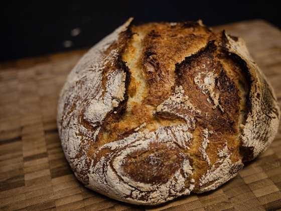
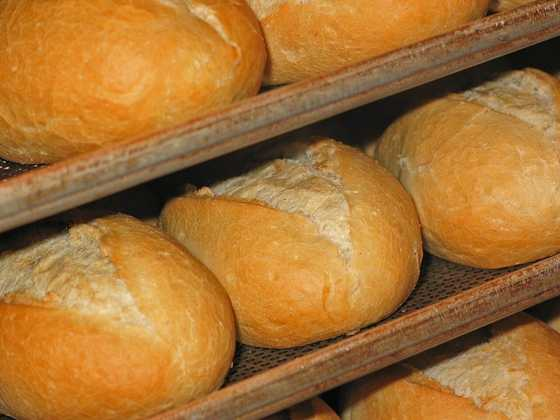

島根県松江市宍道町のパン屋
ここに長く根付き、
街の日常の一部に。
BAKE32は、ふらっと寄り道できる身近なパン屋さんを目指して、2025年12月に宍道町で開いたお店です。
お店の由来と想い
店名の「32」は、お店の番地から。
紹介記事によると、BAKE32は2025年12月12日、松江市と出雲市の中間にあたる宍道町にオープンしました。店名の「32」は、お店の場所の番地(昭和32)に由来するとされています。
込められているのは「ココに長く根付き、街の日常の一部になれるように」という想い。ふらっと寄り道できる、身近なパン屋さんを目指しているそうです。店頭には約25種類のパンが並び、年齢や好みを問わず選びやすいことを大切にしていると紹介されています。
店主の奥原さんが食パンとハード系、ご家族(義理のお姉さん)がベーグルと焼き菓子を担当しているとのことです。
情報源: 日刊Lazuda/TSKさんいん中央テレビ Soupful/Instagram
見出しの言い回しなど、上記の事実以外の文章は制作側の表現です。


パンのご案内
ハード系から菓子パンまで。
紹介記事で触れられていた種類をまとめています。内容は変わることがあり、価格・最新の品ぞろえは「準備中」としています。写真はフリー素材のイメージで、お店のパンそのものではありません。
バゲット・ハード系
国産小麦を使ったバゲットが看板のひとつとして紹介されています。明太バゲット、カンパーニュなども。
食パン
山型食パンが紹介されています。
惣菜パン
牛すじカレーパン(揚げずに焼く)など。冬にはカブや春菊を使った季節のパンも登場したと紹介されています。
菓子パン
メロンパン、ラムレーズン練乳クリーム、自家製クリームパンなど。
ベーグル・焼き菓子
ご家族が担当するベーグルと焼き菓子。提携先の品も並ぶと紹介されています。





口コミ(イメージ例)
こんなふうに、立ち寄ってもらえたら。
以下は制作側が創作したイメージ例で、実在のお客様の声ではありません。
朝いちばんに寄れるところにあるのがうれしくて、つい買いすぎてしまいます。
お店の人が書いたポップを読みながら選ぶのが楽しいです。次はまだ食べていないパンにします。
通りがかりに立ち寄れる気軽さがいいです。夕方前に行くと品数が減っていたので、早めに行くのがおすすめです。



アクセス・ご案内
国道9号沿い、宍道駅の近く。
| 所在地 | 〒699-0408 島根県松江市宍道町昭和32 |
|---|---|
| 電話 | 準備中 |
| 営業時間 | 準備中 |
| 定休日 | 準備中 |
| 駐車場 | 準備中 |
| SNS | Instagram @bake32matsue |
営業時間・定休日・価格は変更されることがあるため、掲載せず「準備中」としています。パンが売り切れ次第の終了となることがあると紹介されています。最新情報はInstagramをご覧ください。